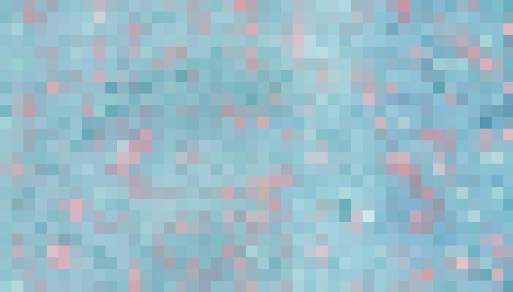

Fotoğrafta Piksel Nedir? Dijital Görsellerin Temel Taşı
Dijital fotoğrafçılıkla ilgilenen herkesin sıkça duyduğu bir terim olan “piksel”, modern fotoğrafların temel yapı taşıdır. Dijital dünyada renkli, yüksek çözünürlüklü görüntüler sunmamıza olanak sağlayan bu küçük karelerin arkasında karmaşık bir yapı bulunur. Pikselin ne olduğunu, nasıl çalıştığını, fotoğraf kalitesine nasıl etki ettiğini ve baskı ile dijital kullanım arasındaki farkları daha iyi anlamak için ayrıntılı bir yolculuğa çıkalım.
Piksel Nedir?
Dijital görüntülerin en küçük birimi olan piksel, “picture element” yani “görüntü öğesi” teriminden gelir. Pikselin kendisi, görsel verinin bir mikro parçasıdır. Dijital bir fotoğrafa yakından baktığınızda, küçük kareler şeklinde bölünmüş olduğunu görebilirsiniz; işte bu karelerin her biri birer pikseli temsil eder. Her pikselin içinde, görüntünün bir parçasını oluşturan renk ve parlaklık bilgisi bulunur.
Bir fotoğrafın çözünürlüğü arttıkça piksel sayısı da artar, bu da detay ve netlik bakımından daha kaliteli bir görüntü oluşturur. Ancak, çok fazla piksele sahip bir görüntü daha yüksek bir dosya boyutuna sahip olacağından, depolama ve işleme süreçlerinde daha fazla yer kaplayacaktır.
Piksel ve Çözünürlük İlişkisi
Bir görüntünün piksel sayısı, çözünürlük dediğimiz kavramı belirler. Çözünürlük, görüntü kalitesini belirleyen temel bir unsurdur ve yatay ve dikey eksendeki piksel sayısıyla ifade edilir. Örneğin, 1920x1080 çözünürlüğünde bir görüntü, yatayda 1920 ve dikeyde 1080 piksel içerir; bu da toplamda yaklaşık 2 milyon piksel (2 megapiksel) anlamına gelir. Günümüzde fotoğraf makineleri ve akıllı telefonlar, genellikle 12, 24, hatta 48 veya daha fazla megapiksele sahip görüntüler üretebilir.
Daha fazla piksel, bir görüntünün daha fazla ayrıntı taşımasını sağlar. Örneğin, büyük boyutlu baskılar yapmak veya bir fotoğrafı kırpıp detay kaybetmeden yeniden çerçevelemek istiyorsanız yüksek çözünürlükte bir görüntü tercih etmelisiniz. Ancak, çevrimiçi yayınlar veya sosyal medya için, çözünürlüğü daha düşük fotoğraflar da tatmin edici olabilir.
Piksel Renkleri: RGB Modeli ile Renklerin Oluşumu
Her piksel, dijital bir görüntüde tek bir rengi temsil eder. Dijital cihazlar, genellikle “RGB” (Red, Green, Blue - Kırmızı, Yeşil, Mavi) renk modeli kullanarak bu renkleri oluşturur. RGB modelinde, kırmızı, yeşil ve mavi renk kanallarının farklı yoğunlukları bir araya gelerek her pikseldeki renk değerini oluşturur. Her bir kanal, 0’dan 255’e kadar bir değer alabilir. Örneğin, bir pikselin kırmızı değeri 255, yeşil değeri 0 ve mavi değeri 0 olduğunda bu piksel parlak kırmızı olarak görünür. Tüm kanallar 255 olduğunda piksel beyaz olurken, tüm kanallar 0 olduğunda piksel siyah olur.
Bu model, dijital ekranların geniş bir renk yelpazesi sunmasını sağlar ve milyarlarca renk kombinasyonu oluşturabilir. RGB kanalları, her pikselin içinde detaylı renk geçişleri yaratır; bu sayede fotoğraflarımız gerçekçi ve doğal görünür.
Piksel Yoğunluğu: DPI ve PPI Nedir?
Bir görüntünün piksel yoğunluğu, genellikle DPI (Dots Per Inch - inç başına düşen nokta) veya PPI (Pixels Per Inch - inç başına düşen piksel) birimleriyle ifade edilir. Piksel yoğunluğu, bir görüntünün fiziksel baskıda veya dijital ekranlarda nasıl görüneceğini belirler.
- DPI: Bu terim, baskı ortamında yaygın olarak kullanılır. Bir fotoğrafın baskı kalitesini belirlemek için DPI değeri önemlidir. Örneğin, kaliteli bir fotoğraf baskısı için 300 DPI tercih edilirken, gazete veya poster gibi büyük baskılarda bu değer 150 DPI’a kadar düşebilir.
- PPI: Dijital ekranlarda görüntülenen görseller içinse PPI değeri önemlidir. Ekran yoğunluğu arttıkça (örneğin 400 PPI ve üzeri olan retina ekranlar), görüntü daha keskin ve canlı görünür. Web’de kullanılan fotoğraflar için genellikle 72 veya 96 PPI yeterli olsa da, kaliteli ekranlarda bu yoğunluk daha yüksek olabilir.
Dijital ortamda gösterim için düşük PPI yeterli olabilirken, baskıda kaliteyi korumak için daha yüksek bir DPI gereklidir. Bu yüzden baskı ve dijital kullanım arasında uygun çözünürlüğü seçmek önemlidir.
Piksel Kalitesi ve Görüntü Detayı
Yüksek piksel sayısı, her zaman yüksek kalite anlamına gelmeyebilir. Fotoğrafın kalitesinde önemli olan yalnızca piksel sayısı değil, aynı zamanda ışık, kontrast, renk dengesi, lens kalitesi ve sensör boyutu gibi faktörlerdir. Piksel sayısı görüntüye daha fazla detay katabilir ancak diğer teknik detaylar doğru değilse fotoğraf beklenen kalitede olmayabilir.
Örneğin, gece fotoğrafçılığında daha büyük piksel boyutuna sahip olan bir kamera, ışığı daha iyi toplayarak düşük ışık koşullarında daha az parazitli ve daha net görüntüler sunar. Bu nedenle yalnızca megapiksel değerine değil, kameranın genel donanımına ve ayarlarına da dikkat etmek önemlidir.
Piksel Sayısını Fotoğraf Çekiminde Nasıl Kullanmalıyız?
Piksel sayısı, fotoğraf çekiminde neye odaklandığınıza bağlı olarak doğru bir şekilde değerlendirilmelidir. Eğer fotoğrafı yalnızca sosyal medyada paylaşmak veya çevrimiçi bir albümde kullanmak istiyorsanız, daha düşük çözünürlüklü (2-5 megapiksel) fotoğraflar yeterli olabilir. Ancak büyük baskılar almak, detayları yakınlaştırmak veya geniş çapta kırpmalar yapmak istiyorsanız, 20-40 megapiksel gibi daha yüksek çözünürlükte çekimler tercih edilmelidir.
Öte yandan, yüksek çözünürlükteki görüntüler daha büyük dosya boyutlarına sahip olacağından depolama alanını hızlıca tüketebilir ve işleme sürecini yavaşlatabilir. Bu yüzden, fotoğraf çekim amacınızı göz önünde bulundurarak, en uygun çözünürlük ve dosya boyutu dengesini kurmak faydalıdır.
Sonuç
Fotoğrafta piksel, dijital görüntülerin en temel birimi olarak fotoğraf kalitesini doğrudan etkiler. Çözünürlük ve piksel sayısı fotoğraflarda daha fazla ayrıntı yakalamanızı sağlarken, ekran ve baskı ortamına göre DPI veya PPI değerini doğru ayarlamak görüntü kalitesini artırır. Dijital fotoğrafçılık dünyasında piksel kavramını anlamak, fotoğraflarınızda daha bilinçli tercihler yapmanıza ve çekimlerde en iyi sonuçları elde etmenize yardımcı olacaktır. Fotoğraflarınızı bu bilgilerle en iyi şekilde değerlendirip sergilemeye başlayabilirsiniz!